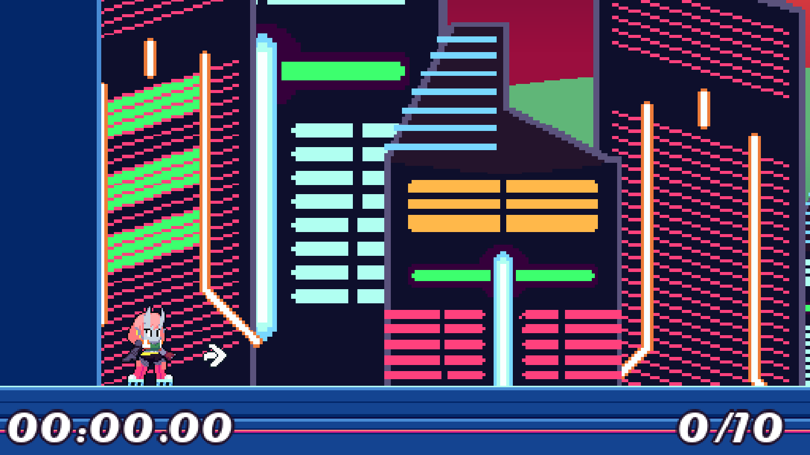
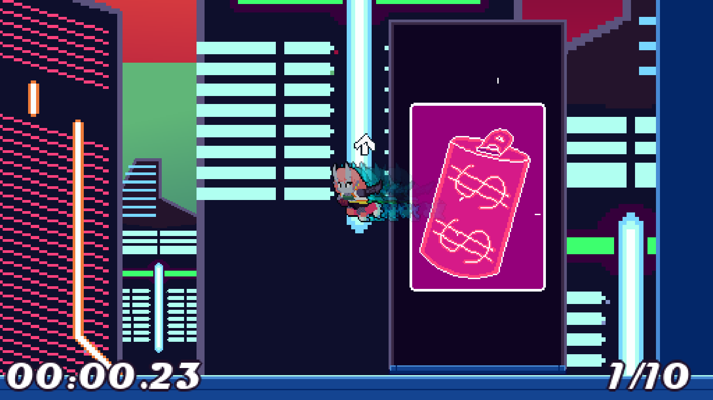
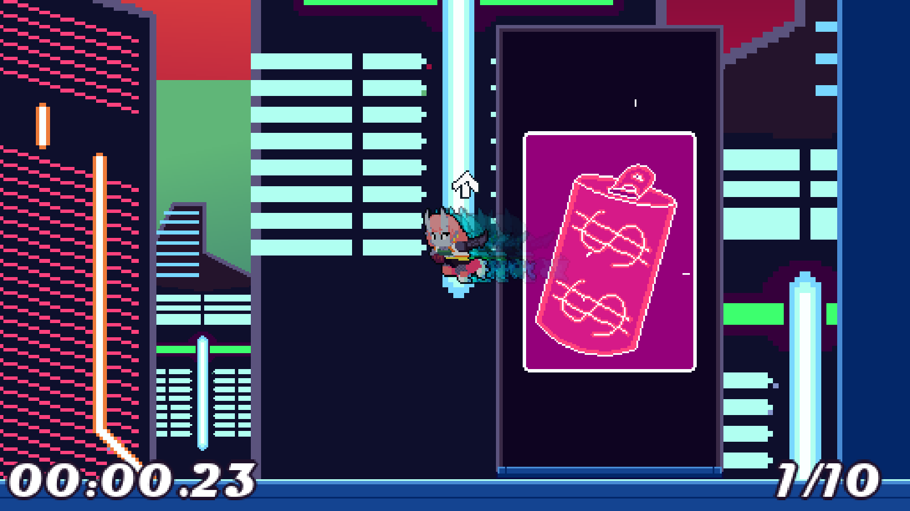

Neon Amazing Dasher
Released: June 21st 2021
Genre: Platformer Time Attack
Created by: Me and the Boys
Role: Programmer
Engine: GMS2
Team Size: 5
Game Description
Those signs aren't gonna fix themselves! Rollerblade all over town to find broken neon signs, and dash into them to fix them! Try to get the best time you can!
My Experience
Made for the Amaze Me Game Jam with some friends of mine! The theme was neon, and we originally planned to make a top-down game where you go around, fight enemies, and fix lights in a seperate light puzzle mini-game. Instead, we decided to make it a time-attack platformer, kind of like break the targets in smash, but you dash into neon signs to fix them. We took the jam pretty easy and had fun just messing around and trying to make a cool game. Anthony coded the platformer-player code, I made all the systems revolving around that and UI, and Chris helped me with some effect code. Always fun to mess around in Game Maker!
Links:


Screenshots
 
